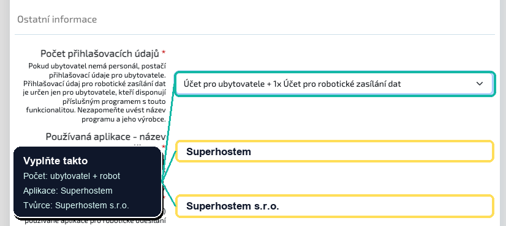

If you are short-term accommodation of guests in the Czech Republic, you must also deal with reporting foreigners to the foreign police. A practical way is to register for Ubyport, where you will get access data for working with accommodated guests.
If you do not have registration yet, start with the application for a new accommodation facility. If you already have IDUB, jump straight to the web-services account request.
StartingI do not have registration yet
You do not have IDUB and the accommodation is not registered in Ubyport yet.
On the Ubyport login page, click the green button for registering a new accommodation facility.

In Other information, choose accommodation-provider account + robotic data account. Enter Superhostem as the application and Superhostem s.r.o. as the creator.
When you already have registration
A regular Ubyport login is not enough. For Superhostem, you need credentials for robotic or web-based data entry.
1
You have registration and IDUBYou do not need to register the accommodation again.
2
Send a request through your data mailboxRequest an account for robotic data submission for superhostem.cz.
3
Receive web-services credentialsThese are the credentials required for automated reporting from Superhostem.
4
Save them in SuperhostemAdd them to the settings of the relevant property.
What to watch out for
AddressesEach address separatelyMultiple accommodation addresses mean multiple registrations.
RUIANIf the address is missingUse the municipal office address and explain the location in the form note.
EmailIt must be correctImportant police information will arrive at the contact email.
This article is a practical guide, not legal advice. Before sending, verify details in the current Ubyport form and Police of the Czech Republic instructions.